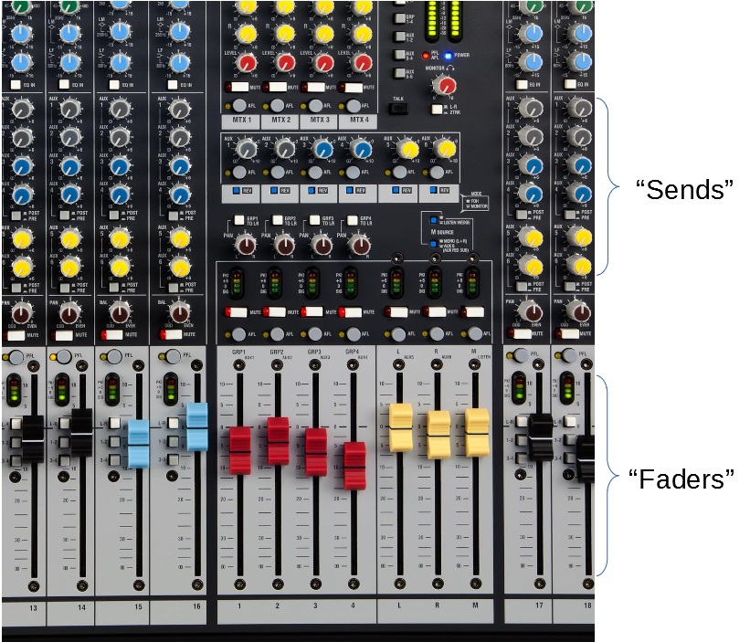
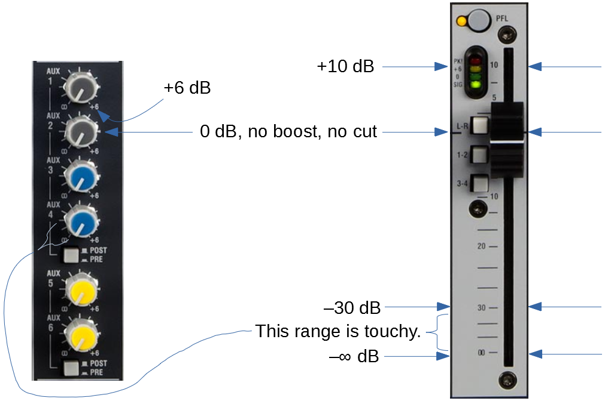

Fader
A fader might also be known as a "potentiometer," or a "pot," or a "slider," or a "slide-pot," or a "send," or a "sender." The term seen most often in literature seems to be "fader."
A fader is any device used to control the amount of signal coupled from a channel or bus to another bus. The signal may be mono, stereo or multi-channel. By moving one control the amount of the signal that is coupled is smoothly varied from nothing to a strong amount.
(If the control is used to blend from one sound to another sound via only one motion of the control—if there are two signal sources, one destination, and one control—this is called a crossfader. Most mixers that are specialized for disk-jockey or DJ use will feature at least one crossfader to allow an easy transition from one song to the next by moving only one control knob. This web page is not about crossfaders. Mixers designed for live-sound reinforcement usually have no crossfaders. In order to achieve the same effect without a crossfader one needs move one fader up while simultaneously moving another fader down.)
Some people associate the word fader with linear slide-potentiometers and the
word sender with rotary knobs or rotary-potentiometers. These items are
electrically identical. The only difference is the type of motion needed to actuate
the control.

Logarithmic Taper
Faders (or sends—from now on they will all be called "faders" in this document) are not just ordinary potentiometers. They have a logarithmic resistive taper so that they respond to the electrical signals closer to the way our ears respond to sound-pressure levels as compared to a linear resistive taper. When the fader is in or near the lower fifth of its range of motion, due to various technical reasons, the taper is not very accurate. This gives the control a great deal of sensitivity or touchiness. Just a small amount of adjustment to the control seems to make a large change in (e.g. seems to double or quadruple) the loudness of the sound. But very desirably, in the top 4/5 of the range of adjustment the loudness of the sound varies smoothly and appropriately with the amount of motion the control is given. If faders used in mixer boards were not given this logarithmic taper the top 4/5 of the range of motion would do very little. Almost all the loudness variation would be in the bottom fifth of the range of motion. The logarithmic taper flips this character around and makes most of the range of the control behave much more as we expect it should.
The down-side of using faders with logarithmic tapers (also known as audio tapers) is that the bottom fifth of the fader's range of motion is very difficult to use constructively except as a distance to pass through to fade a signal down to zero or up from zero. If you find that the sound is the proper loudness to blend well into the mix only when the fader is in the bottom portion of its range you will find the mix hard to control. Tiny adjustments to the faders will make big changes. This is symptomatic of a gain structure problem. That is a story for another day. For now, take at least the first step and scan the board for any blinking read "PK" or "peak" LEDs and use the channel's PFL button to check the adjustment of the gain-trim knob. Most of the time if you are mixing with the fader in the bottom portion of its range the problem is the gain-trim knob, but there can be other ways to mess up the gain-structure.
Faders are marked in decibels. The 0 dB spot is the nominal spot where the sound in the channel is neither amplified nor attenuated. It is just passed over to a bus (or busses). If the fader is set above 0 dB then the sound sent to the bus will be that much louder than the sound in the channel and vice versa, if the fader is set below 0 dB then the sound sent to the bus (or busses) will be softer than the sound in the channel by that much. It is more-or-less an industry standard that faders should provide smooth action between +10 dB (all the way up) and -30 dB (about 1/4 of the way up). You will see these same decibel markings on practically all professional mix consoles, digital or analog. (Our less expensive Alan & Heath GL2400 mixer has only a +6 dB boost available on the AUX faders.) When the fader is all the way down it is said to be set at -∞ dB (minus infinity decibels).

On the right side of the illustration above, the AUX faders have a small triangle at
the
3 o'clock position to mark the 0 dB setting. Settings for these faders that
provide pleasing mixes typically range from about 9 o'clock to 3 or 4 o'clock. If
a setting in this range is not available to make the signal the right loudness in
the mix, then there possibly is a gain-structure error.
On the left side of the illustration above you can notice a heavy line at the 0 dB setting that extends across all the channels. Pleasing mix settings can usually be found somewhere between the -30 dB setting and about +3 dB. If you have to go outside this range to get a pleasing loudness of the channel in the mix you may do so but be on guard for a gain-structure error.
In fact, if your gain-structure is well set, usually a pleasing mix will be found when the faders are in the –10 to 0 dB range.
Anticipating the next portion of the worship service
As as worship service transitions from one portion of the service to the next, for example from a prayer to a praise-and-worship song, it is proper for the sound operator to anticipate which faders need to be pushed up for the next event. Some sound operators do this by pushing these faders up about 1/4 inch to make them quick-to-find when the moment for action arrives. One needs to be careful with this strategy. The faders are touchy in these low ranges and one might couple more of the signal into the mix than anticipated. Especially if the praise team is picking mics out of stands (to hand-hold them) or doing other noisy things in anticipation of the song, way more of these noises can get coupled into the final mix than you might have anticipated.
As an alternative strategy, some operators cut up refrigerator magnets into small strips about 1/2 inch high by the width of a channel-strip. These can be easily moved around during the worship service to mark the next channels or groups to become active in the mix. Most mixer boards feature about an inch or two of a flat steel surface below the main faders to accommodate either adhesive or magnetic labels. In any case, it routine to stick various labels on this area to assist with rapid recognition of the channels, and to remove, add, and edit these labels frequently as desired.
Return to HoW Sound homepage